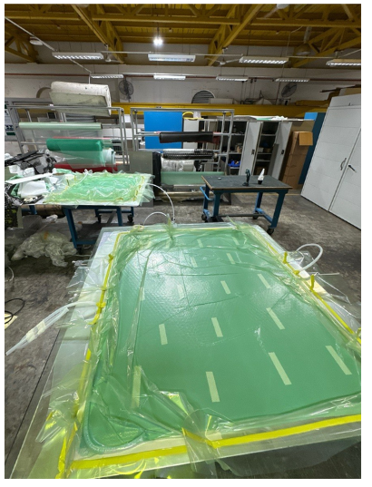
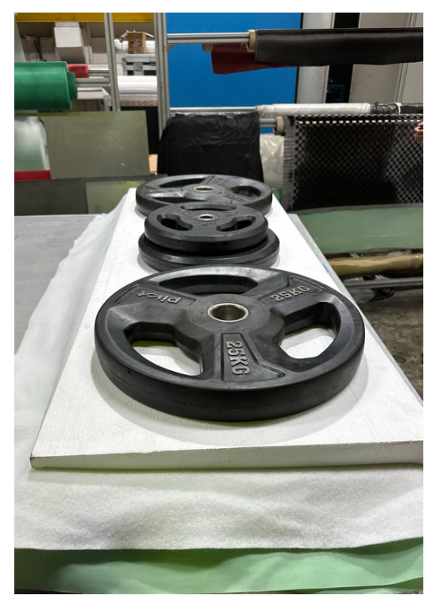

7. Manufacturing & Prototyping
7.1 Flat Panels


7.2 Vacuum Infusion Manufacturing

We manufactured our flat panels using vacuum infusion, where the dry fiber is layed on a metal sheet and sealed in a vacuum bag using sealant tape. Then, a vacuum pump is used to remove the air and create a tight seal, whilst drawing epoxy is into the bag, with the mesh helping to allow it to flow evenly across the panel. The panel is then left to cure for 48 hours before the bag is removed. Next, we cut the panel to size before sending it out for waterjet cutting into the parts that we require.
7.3 Rear Wing Elements and Front Wing Mainplane
These larger elements were made using a wet-layup. Two layers of carbon fiber were laminated with epoxy resin, then draped over a male mold and sandwiched in between the female part of the mold to hold its shape. Weights were then put on top of the mold and left to cure.

This manufacturing method is more cost-effective for larger elements due to the relative affordability of EPS foam.
7.4 Front Wing Flaps
A female ABS mold was 3D printed. Prepreg Carbon Fiber was used for this.
Female molds were chosen for the small flaps since the male molds would leave the surface of the wing with the texture of the breather fabric; with the female mold, the outer part surface would be on the surface of the mold, ensuring a smoother finish. However, due to the geometry of the part, the vacuum bag would often fail, causing the part to deform or have undesirable dry patches. The new design seeks to mitigate this issue by having simpler geometry, which would make manufacturing less prone to failure and the finished part to be more accurate to the CAD.
7.5 Bonding of Elements
An acrylic bonding jig was used to hold the internals in the correct position while they were bonded. Its pieces are bolted to one another, and a horizontal locking piece keeps them aligned. The carbon rods that carry the internals are also bolted to the jig, keeping the assembly accurate to the CAD.
The carbon fibre skin is bonded to the internals, and weight plates are placed on top to apply even clamping pressure across the bonding surfaces while the epoxy cures.